Café BergamoteCafé de spécialité, pâtisseries du matin et brunch le dimanche
Des grains torréfiés en Alsace, des viennoiseries cuites sur place et une cour fleurie à l'arrière. Sur place ou à emporter, juste en face du marché de Rouffach.
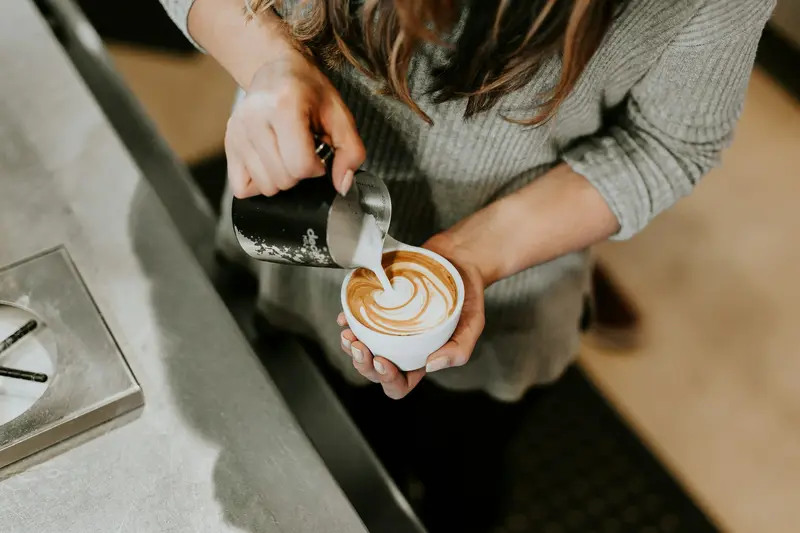
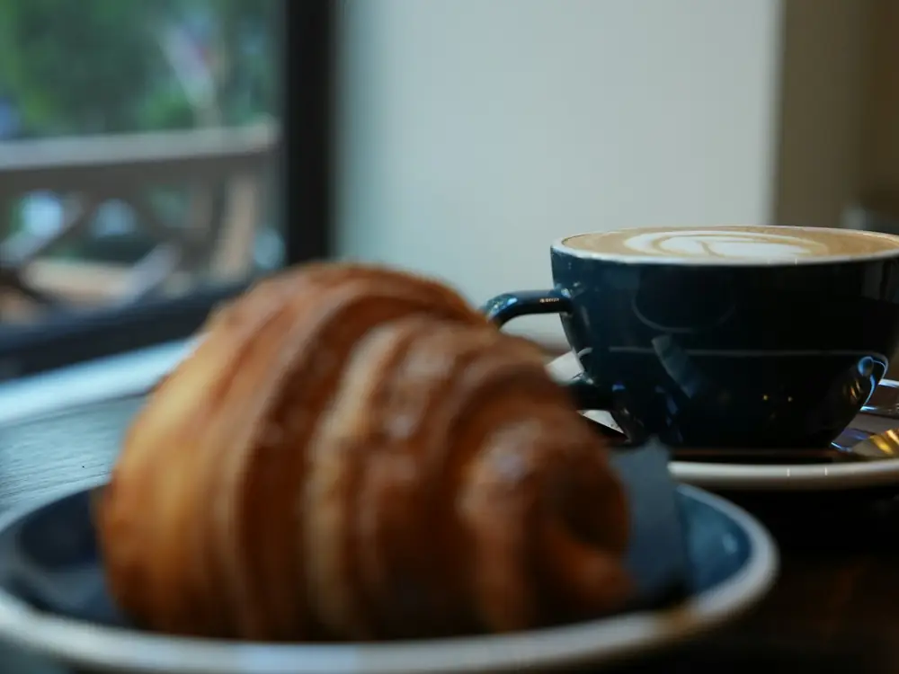
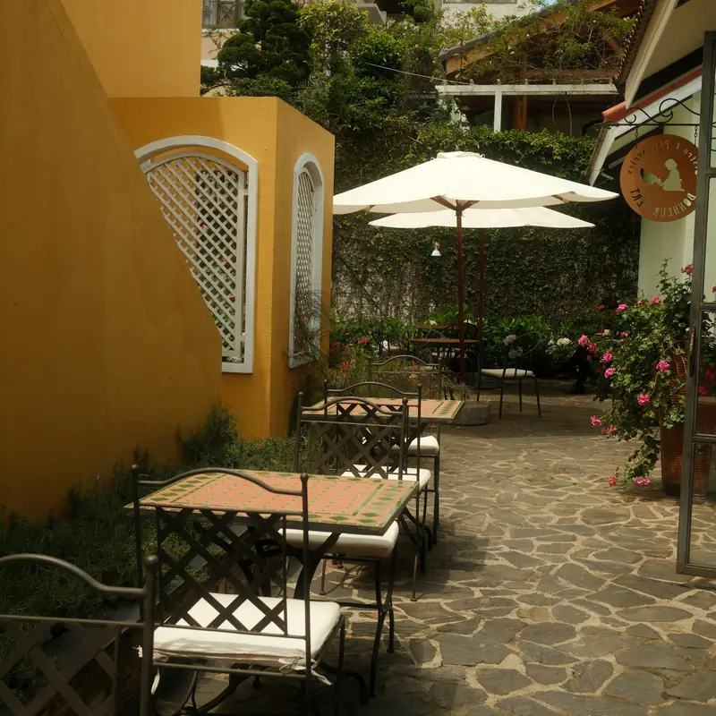
Une journée chez Bergamote
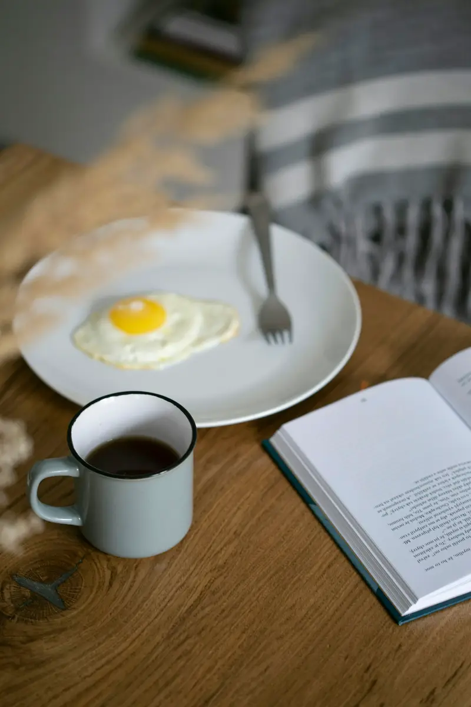
Le matin
dès 7 h 30
Un café filtre et un croissant encore tiède, au comptoir ou près de la fenêtre.
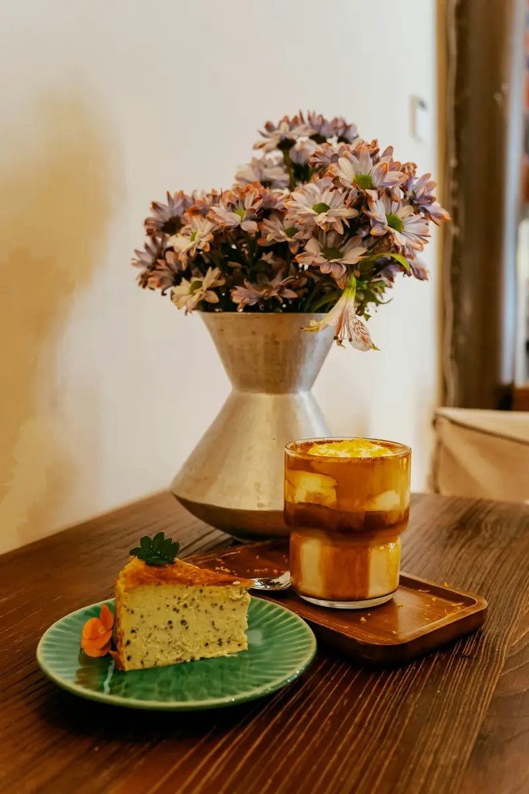
L'après-midi
de 14 h à 18 h
Le gâteau du jour, un chocolat chaud maison, et la cour fleurie quand il fait beau.
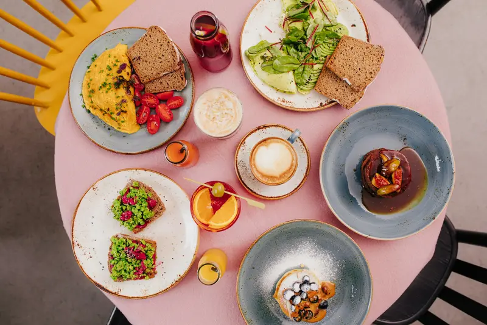
Le dimanche
brunch de 10 h à 14 h
Le brunch complet, sucré et salé. Pensez à réserver, la salle n'a que vingt places.
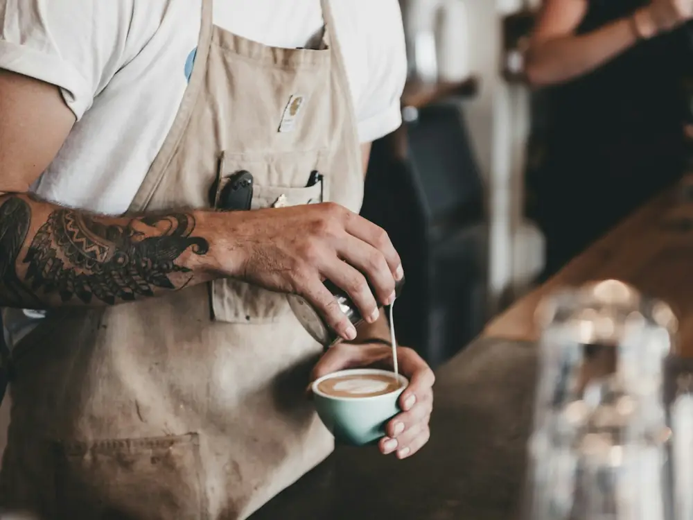
Le café
Bergamote, c'est un petit café de vingt places, juste en face du marché, avec une cour fleurie à l'arrière.
Les grains viennent d'un torréfacteur de Colmar, le lait d'une ferme du Haut-Rhin. Les viennoiseries et les gâteaux sont cuits ici, chaque matin.
On peut travailler sur place en semaine : le wifi est gratuit et il y a des prises le long de la banquette.
Le café en images
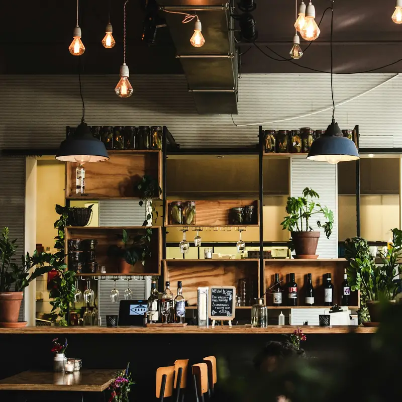
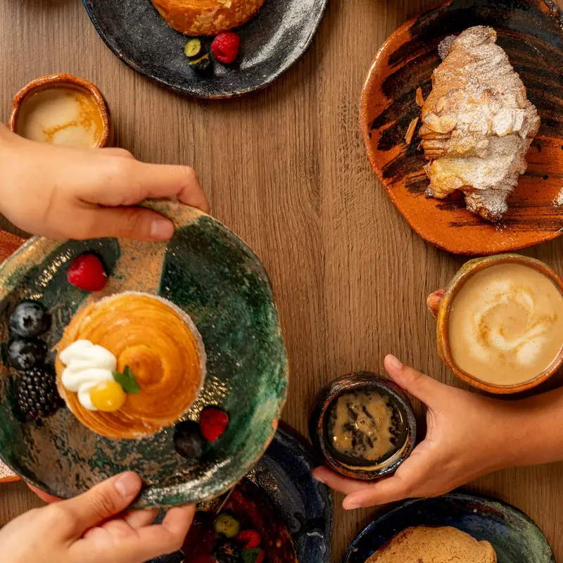
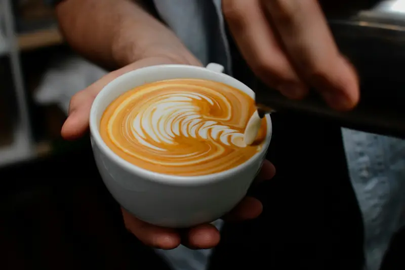
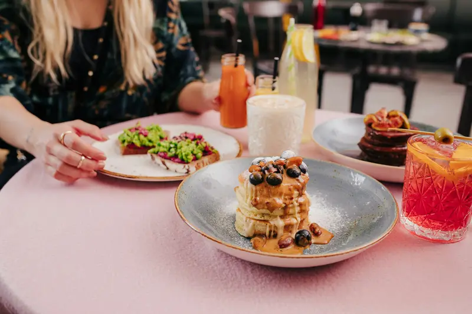
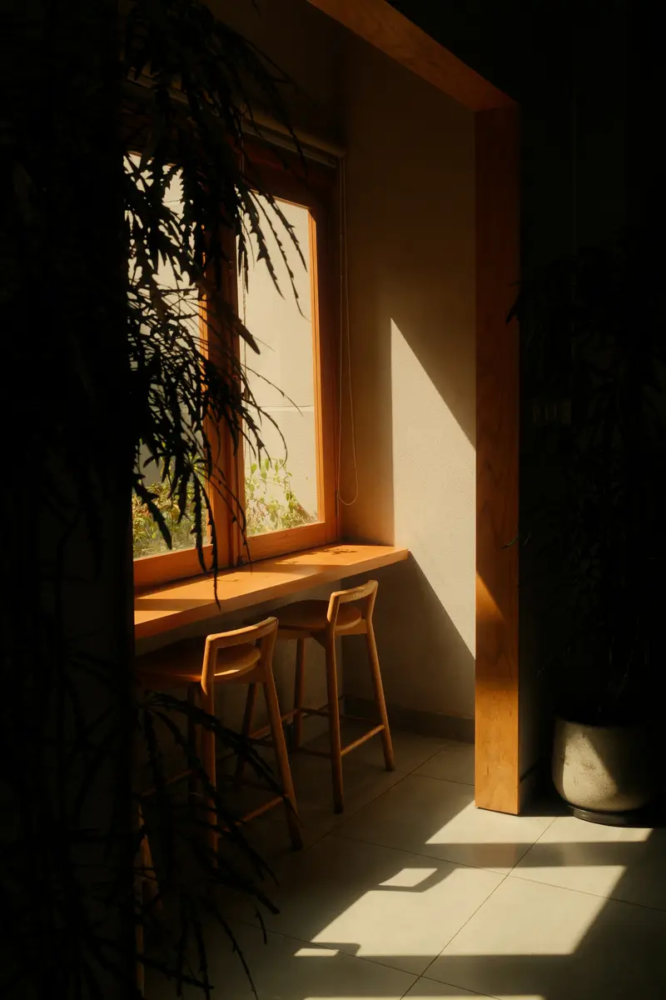
Le brunch du dimanche se réserve.
Réserver par téléphoneIls nous recommandent
4,8
143 avis sur Google
Camille D. Le flat white est vraiment bien fait et les pâtisseries changent avec les saisons. Coin calme pour travailler le matin.
Yann P. Brunch du dimanche réservé par téléphone : généreux, tout est fait maison. Pensez à réserver, c'était complet dès 10 h.
Hélène G. Accueil adorable, on sent qu'ils aiment leur métier. Le chocolat chaud du mercredi avec ma fille est devenu notre rituel.
Les avis les mieux notés, du plus récent au plus ancien. Avis publiés sur Google par leurs auteurs, sans contrôle de notre part.
Avis imaginaires, comme l'entreprise. Sur le site d'un client, ses derniers avis Google s'affichent ici et se mettent à jour tout seuls.
Questions fréquentes
Peut-on travailler sur place ?
Oui, le wifi est gratuit et il y a des prises le long de la banquette. Le dimanche midi, la salle est réservée au brunch.
Faites-vous des gâteaux sur commande ?
Oui, pour 6 à 12 personnes. Commandez trois jours à l'avance, par téléphone ou avec le formulaire.
Horaires et accès
- 6 rue du Marché
68250 Rouffach - 03 53 01 52 50
- bonjour@cafe-bergamote.example
- Itinéraire